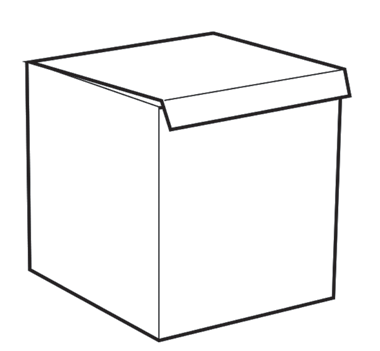
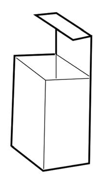

Figure 13: How to secure the bottom parts of a paper bag
Steps for making boxes
Choose the box size you want to make and strip it carefully by following the joints. Figure 14 shows samples of boxes of different sizes;


Figure 14: Boxes of different sizes
Fold the middle bottom flap up to close the base of the paper bag.The bottom flaps meet in the middle to make a firm paper bag base.Figure 13: How to secure the bottom parts of a paper bagActivity 2(a)Use a paper bag to create a template for the bag.(b)Use that template to make at least five bags.Steps for making boxes1.Choose the box size you want to make and strip it carefully by following the joints.Figure 14 presents samples of boxes of different sizes;A large box with a lid folded over the top.A tall, narrow box with an open top and a lid raised up.Figure 14: Boxes of different sizes